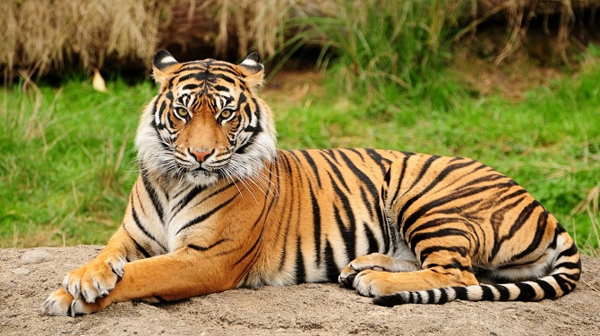

Tiger

The Tiger has long been hunted for its distinctive patterned fur.
Of the nine tiger subspecies, three are already extinct, many are
endangered, but it is the South China Tiger and the Sumatran Tiger that
currently face the biggest threat to their survival. Tragically,
the South China Tiger is thought to be extinct in the wild as it hasn’t
been spotted since the 1970s. The Sumatran Tiger is the only surviving
tiger subspecies indigenous to Indonesia and as of 2008 it has been
classified by the IUCN as Critically Endangered. Less than 500 of these
tigers exist today in comparison with a population estimation of up to
1,000 in 1978.